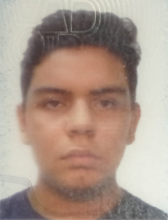

Oscar Gerardo Pineda
Un diseñador gráfico es un profesional dentro de la industria del diseño gráfico y las artes gráficas
que ensambla imágenes, tipografía o gráficos en movimiento para crear una pieza de diseño.
Un diseñador gráfico crea los gráficos principalmente para medios publicados, impresos o electrónicos
como folletos (a veces) y publicidad. A veces también son responsables de la composición tipográfica
La ilustración , las interfaces de usuario y el diseño web.. Una responsabilidad fundamental
del trabajo del diseñador es presentar la información de una manera que sea accesible y memorable.
Una licenciatura o un certificado de una escuela de comercio acreditada generalmente se considera esencial para un puesto de diseño gráfico. Sin embargo, una vez que se ha establecido una trayectoria profesional, la experiencia del diseñador gráfico y el número de años en el negocio se consideran las calificaciones principales. Un portafolio , que es el método principal para demostrar estas calificaciones, generalmente se requiere que se muestre en las entrevistas de trabajo y se desarrolla constantemente a lo largo de la carrera de un diseñador.
Estudios realizados
- Colegio cristiano Josue - de kinder hasta noveno grado - del 2005 al 2015
- Colegio Bautista de santa ana - Primer y segundo año bachillerato - del 2016 al 2017
- Univerisdad autonoma de santa ana - 6 ciclos - de 2018 al 2021